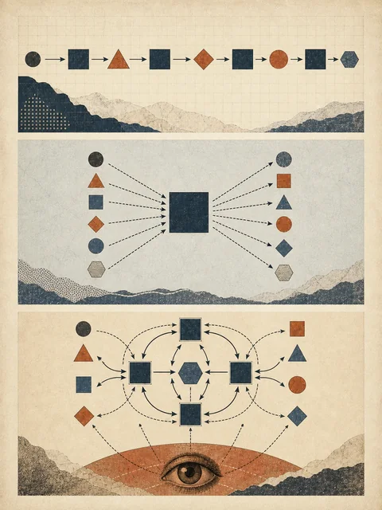

固定流程
客户环境已知不支持、私有端点已知支持，却仍重新核查三项字段
根据 Nova 记录中的证据缺口选择下一步
 VER. 2609
Built with impress.js
VER. 2609
Built with impress.js
本节结束时，你能区分三种模式，并写出状态驱动的循环
客户环境已知不支持、私有端点已知支持，却仍重新核查三项字段
建议“查询地区文档”，但不读取查询结果
只围绕“支持地区＝unknown”获取、检查、更新或停止
如果查询再次返回同一条失效链接，下一轮必须换方法或停止，不能原样重试
本例读到“支持地区 unknown”后查官方矩阵，把来源或失败写回状态卡
三个模式的差别在于下一步是否由状态和反馈决定
节点和顺序预先确定，稳定且容易测试
输入上下文，生成一次候选结果
根据状态和反馈决定是否继续和做什么

智能体内循环在一次运行里行动；跨运行循环决定何时再次启动、读取什么状态以及何时彻底停止
| 比较维度 | 运行内循环 | 跨运行循环 |
|---|---|---|
| 触发 | 当前任务尚未完成 | 定时、事件或验证失败后再次启动 |
| 状态 | 当前会话中的工具结果 | 文件、记录或系统中的持久状态 |
| 验证 | 判断本轮动作是否推进 | 独立检查本次运行能否被接受 |
| 停止 | 完成、无进展或达到本轮上限 | 达到目标、总预算、风险阈值或人工暂停 |
来源：Loop Engineering: Building Blocks, Adoption, and Impact · 截至 2026-09
重复调用只有具备触发、持久状态、验证、预算和停止条件，才成为可控制的跨运行循环
状态至少要能回答
客户环境部署与私有网络端点已有证据和判断
支持地区仍为 unknown，需要官方地区矩阵
旧地区页面链接失效，不能重复访问同一地址
最多再查询两次，只读官方公开来源
智能体不是随意挑选工具，而是回应当前缺口
unknown，说明范围找到当前地区矩阵，更新支持地区和来源位置
搜索摘要提到地区，但原始矩阵不可访问：继续补原文
旧链接再次失效：失败次数增加，不再重复同一调用
待处理字段、可用证据和失败记录都没有变化时，就应停止
待处理字段、来源或判断问题变少
新增结果能够支持下一步判断
已经完成，或达到停止条件并交还给人
如果状态没有变化，继续调用同一工具不是自主，而是重复
先照下面的格式写一轮，再扩展到三到五轮
| 前状态 | 行动 | 反馈 | 后状态／下一步 |
|---|---|---|---|
支持地区为 unknown；尚未查询 | 查官方地区矩阵 | 找到当前矩阵 | 增加可定位来源；下一步抽取地区字段 |
| 旧链接失效；已有一次失败记录 | 换查询条件查当前矩阵 | 仍只有同一失效链接 | 缺口未减少；达到两次上限并转人工 |
先写前状态，再按规则选行动；收到反馈后写后状态和下一步
记录是否重复、是否越过检查点、进展是否真的减少缺口
解释哪一个状态字段、工具权限或查询上限需要修改
把仍需人工判断的位置带入下一讲
今天只定义循环结构，下一讲继续规定
能读什么、能写什么、能不能对外行动
何时结束、何时超时、何时无进展
事实结论是否采用，以及对外发送、写入或删除等动作，由人决定
隐藏作者说明，以“支持地区 unknown”复演观察、行动、反馈和更新
写出目标、已完成字段、待处理缺口、失败记录、工具范围和最多查询轮数
依据“缺官方地区证据”选择当前工具；不得重查已完成字段或重复失效链接
分别模拟找到矩阵、只有摘要、链接再次失效，说明证据、失败次数和下一步怎样变化
判断缺口是否减少；查询次数用尽、需要额外权限或结果无变化时停止，并把待决定问题交给 5.2
若复演者需要猜测状态或权限，就把缺失字段补回状态卡